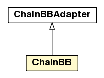

jason.bb
Class ChainBB

java.lang.Object
 jason.bb.ChainBBAdapter
jason.bb.ChainBB
jason.bb.ChainBBAdapter
jason.bb.ChainBB
- All Implemented Interfaces:
- BeliefBase, java.lang.Cloneable, java.lang.Iterable<Literal>
public class ChainBB
- extends ChainBBAdapter
A wrapper for a chain of belief bases customisations.
The arguments are the belief bases in the chain
jason.bb.ChainBB( bb1, bb2, bb3, ... )
where each BB is bbclass(bb paramters)
e.g.:
agents:
bob beliefBaseClass jason.bb.ChainBB(
jason.bb.TextPersistentBB,
jason.bb.IndexedBB("student(key,_)", "depot(_,_,_)")
);
|
Method Summary |
void |
addInChain(BeliefBase bb)
add a new BB at the end of the chain |
java.util.List<java.lang.Class> |
getChainClasses()
|
void |
init(Agent ag,
java.lang.String[] args)
Called before the MAS execution with the agent that uses this
BB and the args informed in .mas2j project.
Example in .mas2j:
agent BeliefBaseClass(1,bla);
the init args will be ["1", "bla"]. |
| Methods inherited from class jason.bb.ChainBBAdapter |
abolish, add, add, clone, contains, getAll, getAsDOM, getCandidateBeliefs, getCandidateBeliefs, getLastBB, getNextAdapter, getPercepts, getRelevant, iterator, remove, setNext, size, stop, toString |
| Methods inherited from class java.lang.Object |
equals, finalize, getClass, hashCode, notify, notifyAll, wait, wait, wait |
ChainBB
public ChainBB()
init
public void init(Agent ag,
java.lang.String[] args)
- Description copied from interface:
BeliefBase
- Called before the MAS execution with the agent that uses this
BB and the args informed in .mas2j project.
Example in .mas2j:
agent BeliefBaseClass(1,bla);
the init args will be ["1", "bla"].
- Specified by:
init in interface BeliefBase- Overrides:
init in class ChainBBAdapter
addInChain
public void addInChain(BeliefBase bb)
- add a new BB at the end of the chain
getChainClasses
public java.util.List<java.lang.Class> getChainClasses()